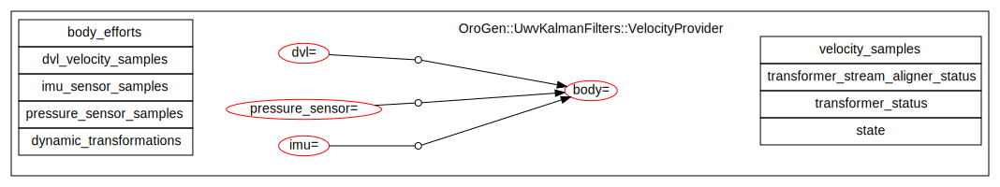
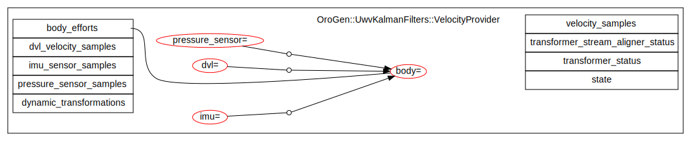
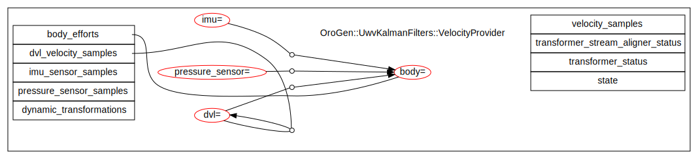
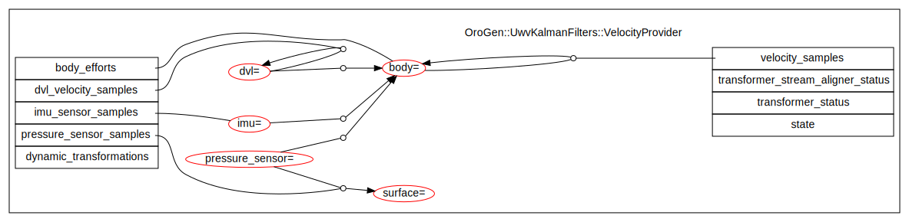
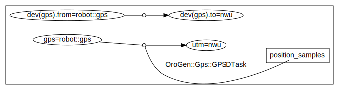
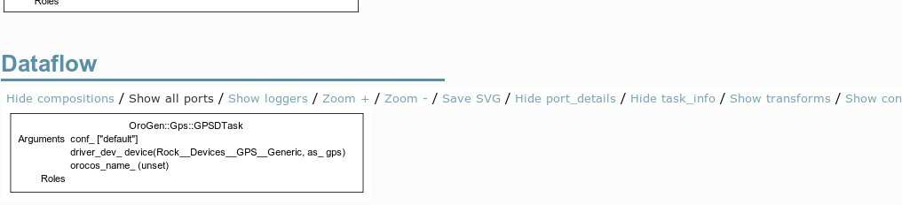
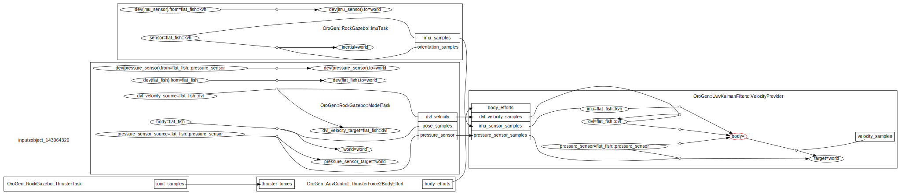

Geometric Transformations
- System-wide frame consistency
- Describing frames and their relations using SDF
- Caveats
- System Design Guidelines
This is a page in a 3-part series.The first part presented the issue, and how to handle geometric transformations within C++ libraries. The second part then discussed how it is handled at the component level.
This last part deals with system-level concerns of consistency (that readers and writers are expecting data in the same frame(s)) and configuration of Rock's transformer.
Geometry support requires that you have drivers/orogen/transformer
in your workspace. Moreover, your Syskit bundle must have
Robot.init do
Syskit.conf.transformer_enabled = true
end
in the robot configuration file (either config/robots/default.rb
or a robot-specific configuration)
System-wide frame consistency
The introduction of frames and frame transformations in components also introduce another dimension in the component configuration. All these frames need to be assigned to global frame names. However, what frame a component should be configured with is related to what it is connected to. There's a relationship between the shape of the component network (port-to-port connections) and the configuration of frames.
Let's consider the visual servoing example outlined in the component part: a visual servoing component takes visual features as input and provides a command within a command frame on the vehicle body. The component's transformer was configured with
task_context "Task" do
needs_configuration
...
transformer do
align_port "detected_features"
transform 'features', 'command'
max_latency 0.1
end
end
In this example, there is obviously the need for the features frame to be the
reference frame from the detected_features input port. Which means for
instance that it is either a camera frame, or the output reference frame of some
intermediate detection component. If the chain starts using a different camera,
the visual servoing component's features frame also needs to be changed.
Breaking the consistency of the frames in the system usually leads to
hard-to-find bugs.
Given that the main paradigm in Syskit is to let the developer (you) build networks, Syskit handles this by (1) auto-configuring frames, when possible, by propagating them through the network and (2) when frames are set explicitly, verifying that it is done consistently.
Devices are the main "anchor" for frames. Indeed frames are constrained by where each data stream "comes from" in the world. This is in practice defined by the placement of the device on the robot. What we will see in the following is how to annotate devices with frames, and how to add annotations to component models so that Syskit can propagate the frames in the network.
Enabling propagation: additional component annotations in transformer-enabled components
When using the transformer, one defines frames and transformations that are relevant for the component's computation. At this level, these frames are considered internal by Syskit, i.e. Syskit cannot guess what are the relations between the frames declared and the component ports.
Let's open a Syskit IDE and display a component's transform annotations (the
component is the uwv_kalman_filters::VelocityProvider
component).

In this view, the frames are oval shaped, with the component-local frame name on the left of the equal sign, and the global frame name assigned to it on the right. Broken lines with a dot that connect two frames together represent transforms.
The important aspect here is that none of these frames are associated with the component inputs and outputs. Let's change that.
First, we need to create an orogen annotation file by running syskit gen orogen
uwv_kalman_filters, and then edit the generated
models/orogen/uwv_kalman_filters.rb. Let's add a transformer block to this,
in which we'll add the required information:
Syskit.extend_model OroGen.uwv_kalman_filters.VelocityProvider do
transformer do
end
end
Two types of annotations can be given:
- annotate a port's data stream with a frame (such as e.g. the reference frame
of visual features). This is done with
associate_ports_to_frame - provide the source and target frame of a
RigidBodyStateport, this is done withassociate_ports_to_transform
Let's take the VelocityProvider ports one by one.
-
body_effortsrepresents the efforts applied on the vehicle in the body frame. It is expressed in the body frame itself.associate_ports_to_frame "body_efforts", "body"After reloading, this new relation is represented by an edge between the port and the frame:

-
dvl_velocity_samplesis aRigidBodyStatewhich represents the velocity of the vehicle expressed in the sensor's frame. It is therefore a dvl-to-dvl transform:associate_ports_to_transform "dvl_velocity_samples", "dvl" => "dvl"The port-to-transform relation is represented by an edge between the port and the white dot in the middle of the transform:

-
imu_sensor_samplesis represented in the sensor's frameassociate_ports_to_frame "imu_sensor_samples", "imu" -
pressure_sensor_samplesrepresents the Z-only transform between the "surface" (an external frame) and the sensor. Since the surface is not part of the component's configuration, we can add a new frame to represent it.associate_ports_to_transform "pressure_samples", "pressure_sensor" => "surface" -
Finally, the component generates the velocity of the body w.r.t. itself
associate_ports_to_transform 'velocity_samples', 'body' => 'body'
The final model looks like this:

Enabling propagation: adding geometry modelling in components that do not use the transformer
As a design driver, one should minimize the amount of components that need to know about frames and frame transforms. For instance, an image preprocessing stage does not need to know about the frame of its image. Most devices do not either. Really, only components that generate RigidBodyState samples meant as input for the transformer do need to know about global frames.
However, in order to enable propagation in the network, one still needs to add the same kind of annotations than with the transformer-enabled components. The annotations use the exact same syntax. The only difference is that unlike the transformer-based components the frame names are "free", i.e. have to be declared within the Syskit extension file as well.
For instance, a hypothetical image preprocessing component would have
transformer do
configurable_frame "image"
associate_ports_to_frame "image_in", "image_out", "image"
end
Note that if your component has a ${frame_name}_frame property, it will be
filled by Syskit at runtime, regardless of whether the component uses the
transformer or not.
Annotating Devices
Devices are the main "anchor" for frames within a component network. Indeed frames are constrained by where each data stream "comes from" in the world. This is in practice defined by the placement of the device on the robot.
Devices that provide a data stream that is not itself a transformation are
attached to a frame with the .frame declaration
device(CommonModels::Devices::Camera::Firewire, as: 'left_camera')
.frame('robot::camera_left')
Devices that actually provide a transformation get it with the
.frame_transform declaration.
device(CommonModels::Devices::GPS::Generic, as: 'gps')
.frame_transform('robot::gps' => 'nwu')
Once the device is attached to a driver, the frame assignment is propagated to
this driver's own frame definitions - assuming that the device driver has the
right associate_frame_to... annotations. In the case of the GPS, it would end
up looking like:

Where the device-assigned frames are shown with the dev(...).frame_name
syntax.
Note that unlike the TaskContext visualizations, where the transforms are shown by default, visualizing transforms in a profile (as, in this case, a device definition), requires to show the transforms explicitly by clicking the "Show transforms" link:

Setting frames that can't be deduced by propagation
Once components and devices have been annotated, most frames are usually set by simply connecting the components together in a profile.
However, certain frames are not tied to a device, but are in effect part of the overall system configuration. These frames must be set explicitly in the profiles. When this happens, one gets the following message while running the tests:
could not find a frame for body in OroGen.uwv_kalman_filters.VelocityProvider
This can be inspected in e.g. the profile page in the Syskit IDE (see the red 'body' frame in the VelocityProvider component)

To fix this, one must explicitly set the body frame in the profile with the
.use_frames statement. Frame selection is recursive (a frame selected in a
composition applies to its children).
define('velocity_provider_filter', Compositions::VelocityEstimation)
.use_frames("ref" => "auv")
Where "body" is the component-local name and "auv" the actual global frame name.
Frame-related errors
Frame-related errors are caught during profile unit-testing and within the Syskit IDE when clicking on a profile definition. The development cycle is usually to run the tests to verify that all frames are set and consistent, and use the IDE to fix the possible problems - since the IDE allows to more easily look at how frames propagate through the ports.
Message: could not find a frame for $frame_name in $component
Problem: a frame cannot be deduced by network propagation
Resolution: In a profile test or when inspecting a definition in the syskit IDE, this error indicates that some information is missing in the profile / network. If the frame is related to a port, make sure that all frame-propagation annotations have been set. Otherwise, set it explicitly in the profile.
This error is expected when inspecting a composition within the IDE. If it happens during a composition or task context test, one needs to explicitely provide dummy frames in the stub calls:
model = OrientationEstimator.
use_frames('map' => 'w', 'world' => 'w', 'imu' => 'body', 'body' => 'body').
transformer { frames 'w', 'body' }
syskit_stub_deploy_and_configure(model)
Message: conflicting frames selected for $frame_name ($selection1 != $selection2)
Problem: an output is connected to an input, but with different frames or transforms selections
Resolution: either some definitions are over-constrained (have frames selected that do not need to be selected), or different selections are conflicting. Check the propagation of said frame in the IDE.
Message: error propagating information on port $port_name of $task
followed by while adding information to port $port_name on $task, cannot merge
a frame annotation with a transform annotation
Problem: an output annotated with a frame is connected to an input annotated with a transform.
Resolution: change the output to a transform (associate_ports_to_transform) or the input to a frame (associate_ports_to_frame)
Message: $task.$port_name was expecting an association with a frame, but
one or more connections mismatch
Problem: an output annotated with a transform is connected to an input annotated with a frame.
Resolution: change the output to a frame (associate_ports_to_frame) or the input to a transform (associate_ports_to_transform)
Describing frames and their relations using SDF
The canonical way to describe all of a system's frames is to provide a SDF file that describes the vehicle, and another SDF file that represents its environment.
Then, a use_sdf_model stanza can be added in a profile to import the SDF
information into the transformer for live systems, and use_gazebo_model for
systems in simulation that use Gazebo.
profile "Base" do
use_sdf_model "model://shiny"
end
The vehicle's base model frame and all the vehicle's links are represented as
frames in the transformer. All links that are joined by a static joint (either
a "static" joint or a dynamic joint with same min/max limits) are related by a
static transform in the transformer configuration. Links are prefixed by the
model name (e.g. shiny::gps)
Providers for the transformation of dynamic joints (e.g. a camera mounted on a PTU) must be explicitly given. A dynamic transformation can be provided by anything that look like a Syskit component (profile definition, particular service of a profile definition, device, …). When deploying networks, if a component needs a certain dynamic transformation, Syskit will instantiate this component and add it to the network.
These components are declared as dynamic producers in the profile's
transformer block
profile "Base" do
use_sdf_model "model://shiny"
robot do
device CommonModels::Devices::PTU, as: 'ptu'
end
transformer do
dynamic_transform ptu_dev,
"shiny::ptu_base" => "shiny::ptu_moving"
end
end
In addition to loading a vehicle model, it is possible to load a SDF world file
to describe both apriori knowledge about the world, and "utility" frames within
the world (such as e.g. a GPS local origin). This is done with the
use_sdf_world stanza in the profile.
profile "Base" do
use_gazebo_model 'model://shiny'
use_sdf_world
end
The default world must be loaded within the requires block of the robot
configuration file:
Robot.requires do
Syskit.conf.use_sdf_world 'empty'
end
the actual world can be overriden at startup time by setting the sdf.world_path
variable, using the --set argument to syskit ide or syskit run, e.g.:
# Will load the 'logistics' scene instead of `empty'
syskit ide --set sdf.world_path=logistics
Caveats
While the use of the geometry annotations in Syskit is only paid at deployment time, there's a dark side to the use of the transformer. Its usage may be paid in latency.
The transformer is a stream aligner. Moreover, to allow for interpolation, it is a stream aligner where all transformation streams are setup with a lookahead ("period") of zero.
What this means in practice is that the stream aligner will have to wait for having two samples on every dynamic transformation stream before it can play anything. In other words, the lowest bound of a transformer's actual latency is the period of its slowest dynamic transformation stream. If you were to have a very slow dynamic transformation producer, it will impact every component that use it.
Make sure that all dynamic transformation producers are of sufficiently high frequency. The lowest producer in the system will drive the latency of all transformer-based components that require it.
System Design Guidelines
Component development
- really think before you use the transformer. Be aware of the caveats.
- use the transformer only to handle robot-internal transformations
- make sure that the frames of all RigidBodyState outputs can be parametrized.
Use the
$(framename)_framepattern to name the relevant properties - name your frames in a way that is relevant to the component, and the component alone. Do not consider system-level concerns to pick these names
System integration
- only devices and very few definitions should have frame selection statements.
Very few frames should be selected within the profile definitions. If you end
up having to copy/paste a lot of
use_framesstatements, it usually means that some propagation annotations are missing